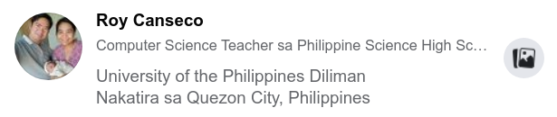

Q4 Removals Plan 2021-06-18T09.54.33
Please do these as soon as possible.
Instructions
If your CS 2 grade is currently a 4.0 or a 5.0, you can avail of this Removals Plan. We will NOT be using KHub , but instead we will use BacKHub for the Removals Plan.
- website: http://khub.mc.pshs.site
- alternative website link: http://backhub.172.105.217.30.nip.io/
- username:
<your KHub username> - password: Pshs_12345
NOTE: change your password once you've logged in.
There is a list of CS 2 third quarter and fourth quarter activities below. Some of those, you haven't submitted. Submit them in the prescribed order. Stop and check your BacKHub gradebook at the prescribed points to see if you already have a 3.0 or better grade. Once you reach 3.0, congratulate yourself, since you are now free to move to CS 3.
Activity List
Quizzes and Long Tests (theoreticals)
The following will instantly and automatically be graded.
You only need to check your BacKHub gradebook to see you grade recorded.
The activity list shows you the Tile => activity name
- 340 - Long Test 1 => Q3 - LT 1 - theoretical (part 1 of 2)
- 350 - Week 5 => Q3 - quiz - linear search
- 360 - Programming Project => Q3 - quiz - binary search
- 370 - Long Test 2 => Q3 - LT2 - theoreticals (part 1 of 2)
- 410 - Q4 Learning Guides => Q4 - Quiz - LG 7.1
At this point, stop. Check you BacKHub gradebook if you have succeeded in obtaining 3.0 or better already. If not, you may proceed to the next set of missed activities to boost your grades.
Q4 Bonus Problems
Correctly answer as many Q4 bonus problems as you wish to increase your score. Some of them are very very easy. You have to follow the instructions exactly though so the AI checker can award you points.
- Go to the tile 400 - Fourth Quarter - Bonus Problems
- Open VS Code OR replit.com
- Solve the programming problem using commandline arguments (NOT cin)
- Submit to https://codepost.io/
- Press the "view test results" button
- See that ALL the Automated Tests passed
- If any of the Automated Tests failed, check for the details / clues regarding the differences between actual and expected program output
- You may re-submit any non-perfect submissions before the deadline ends.
If you get stuck, you may ask help from your classmates who excel in CS. You can also ask help from me, but understand that I am busy with other things at this time. Once you've answered all you can, inform your teacher.
- email: roy@pshs.edu.ph
- discord: sir_roy#0855
- facebook: Roy Canseco

I will then schedule sometime to move your grade from CodePost to BacKHub. All you need is to raise you grade to 3.0 or better.
Google Assignments
You may answer the following activities
- Make A Copy of our gdoc documentation template: Google Docs - template link
- Solve a problems in the section on Programming Problems (Q4 problems weigh more)
- Fill out the gdoc documentation template with your answers
- Upload your code and the gdoc documentation template to our Emergency Submission Form Link:Emergency Submission Form link
- Make sure that the gdoc documentation is shared with your teacher: rvlcanseco@pshs.edu.ph
- See if you can make another copy of the gdoc docu template and answer another problem.
If you get stuck, you may ask help from your classmates who excel in CS. You can also ask help from me, but understand that I am busy with other things at this time. Once you've answered all you can, inform your teacher.
- email: roy@pshs.edu.ph
- discord: sir_roy#0855
- facebook: Roy Canseco
I will then schedule sometime to check your removals submissions. All you need is to raise you grade to 3.0 or better.
Programming Problems Links
Teacher's contact information
For questions or concerns, you may reach me at:
- email: roy@pshs.edu.ph
- discord: sir_roy#0855
- facebook: Roy Canseco